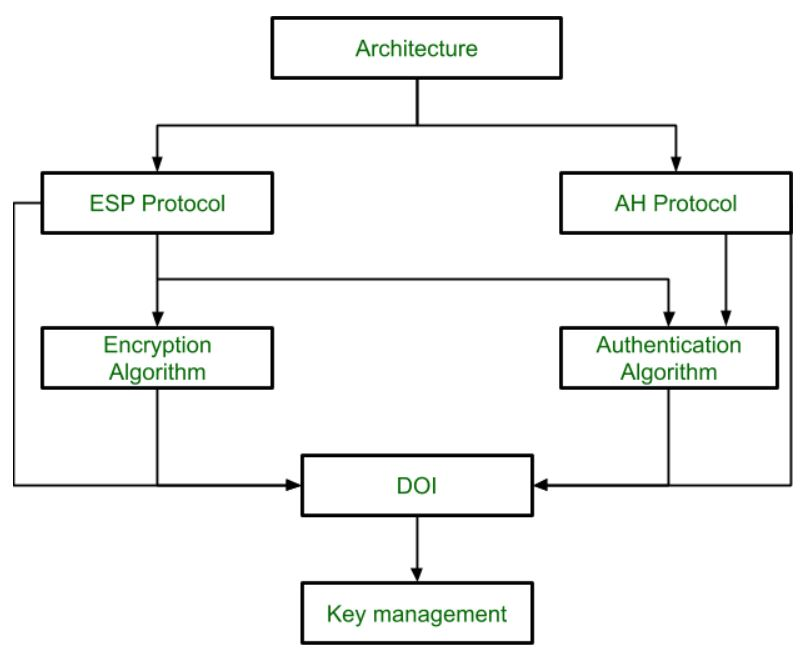
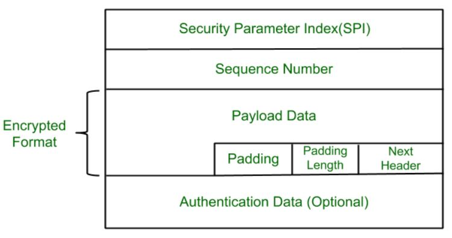
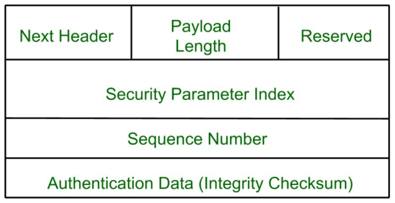

Security Attack: Any action that compromises the security of information owned by an organization or an individual.
These attacks involve the modification of a data stream or the creation of a false stream. They try to alter system resources or affect their operations. They can be subdivided into four categories:
Fermat's Little Theorem states that if p is a prime number, then for any integer a not divisible by p, the following equation holds true:
a(p-1) ≡ 1 (mod p)
Here is the step-by-step numerical solution to find 72019 mod 11:
// 1. Identify given values a = 7 p = 11 // 11 is a prime number // 2. Apply Fermat's Little Theorem: a^(p-1) ≡ 1 (mod p) 7^(11-1) ≡ 1 (mod 11) 7^10 ≡ 1 (mod 11) // 3. Break down the large power (2019) into multiples of 10 2019 = 10 * 201 + 9 // 4. Rewrite the expression 7^2019 = 7^(10 * 201 + 9) = (7^10)^201 * 7^9 // 5. Substitute 7^10 with 1 ≡ (1)^201 * 7^9 (mod 11) ≡ 7^9 (mod 11) // 6. Calculate 7^9 mod 11 using smaller powers 7^1 ≡ 7 (mod 11) 7^2 = 49 ≡ 5 (mod 11) // because 49 = 11*4 + 5 7^4 = (7^2)^2 ≡ 5^2 = 25 ≡ 3 (mod 11) 7^8 = (7^4)^2 ≡ 3^2 = 9 (mod 11) // 7. Combine results to get 7^9 7^9 = 7^8 * 7^1 ≡ 9 * 7 = 63 63 = 11 * 5 + 8 ≡ 8 (mod 11) // Final Answer Result = 8
Euler's Totient Function, written as Φ(n) (phi of n), is a mathematical function that counts how many positive integers up to n are relatively prime (or coprime) to n.
Two numbers are relatively prime if their Greatest Common Divisor (GCD) is 1, meaning they share no common factors other than 1.
Here is a simple example to understand this concept:
// Example: Let's find Φ(6) n = 6 // Step 1: List all positive integers up to 6 // They are: 1, 2, 3, 4, 5, 6 // Step 2: Find the GCD of each number with 6 GCD(1, 6) = 1 -> (Relatively Prime) GCD(2, 6) = 2 GCD(3, 6) = 3 GCD(4, 6) = 2 GCD(5, 6) = 1 -> (Relatively Prime) GCD(6, 6) = 6 // Step 3: Count the numbers that have a GCD of 1 // The numbers are 1 and 5. There are exactly 2 such numbers. // Final Answer for the example Φ(6) = 2
A Galois Field (also known as a Finite Field) is a set that contains a finite number of elements in which you can add, subtract, multiply, and divide (except by zero) without ever leaving the set.
It is denoted as GF(p) or GF(pn), where p is a prime number. In a simple Galois field like GF(7), the elements are just the numbers from 0 to 6, and all mathematical operations wrap around using modulo 7. It is heavily used in computer security and cryptography because it keeps numbers within a fixed size.
Here is the step-by-step division of the polynomials using Modulo 7 arithmetic:
// Given Polynomials Dividend = 5x² + 4x + 6 Divisor = 2x + 1 // In GF(7), all numbers are modulo 7. // First, we need to know how to divide by 2 in GF(7). // Dividing by 2 is the same as multiplying by the inverse of 2. // 2 * 4 = 8 ≡ 1 (mod 7). So, the inverse of 2 is 4. // --- STEP 1: Divide the leading terms --- (5x²) / (2x) = (5 * 4)x = 20x ≡ 6x (mod 7) // First term of the Quotient is 6x. // --- STEP 2: Multiply and Subtract --- Multiply: (2x + 1) * 6x = 12x² + 6x ≡ 5x² + 6x (mod 7) Subtract: (5x² + 4x + 6) - (5x² + 6x) = (4x - 6x) + 6 = -2x + 6 // Since -2 ≡ 5 (mod 7), the remainder becomes: New Dividend = 5x + 6 // --- STEP 3: Divide the new leading terms --- (5x) / (2x) = (5 * 4) = 20 ≡ 6 (mod 7) // Second term of the Quotient is 6. // --- STEP 4: Multiply and Subtract --- Multiply: (2x + 1) * 6 = 12x + 6 ≡ 5x + 6 (mod 7) Subtract: (5x + 6) - (5x + 6) = 0 // Final Answer Quotient = 6x + 6 Remainder = 0
A Digital Signature is a mathematical technique used to validate the authenticity and integrity of a digital document or message. It acts as the digital equivalent of a handwritten signature or a stamped seal but offers far more security.
A digital signature provides three primary guarantees:
The Digital Signature Standard (DSS) uses a public-key cryptography approach. The entire process is divided into two main phases: the Signing Phase and the Verification Phase.
A Firewall is a network security system (either hardware or software) that monitors and controls incoming and outgoing network traffic based on predetermined security rules.
It acts as a protective barrier or a "gatekeeper" between a trusted, secure internal network (like a company's private network) and an untrusted external network (like the public Internet), preventing unauthorized access and malicious attacks.
Firewalls can be categorized based on how they inspect and filter the network traffic:
User Authentication is the fundamental process of verifying the identity claimed by a user or system entity. It is the first line of defense in computer security.
The principles of authentication (how a user can prove who they are) are broadly categorized into four primary factors:
Combining two or more of these principles creates Multi-Factor Authentication (MFA), which significantly increases security.
Once a user is authenticated, Access Control dictates what resources they are allowed to use. RBAC and ABAC are two prominent access control models:
| Feature | Role-Based Access Control (RBAC) | Attribute-Based Access Control (ABAC) |
|---|---|---|
| Core Concept | Permissions are tied to Roles (e.g., "Manager", "Clerk"). Users are assigned to these roles. | Permissions are granted based on Attributes (characteristics of the user, resource, or environment). |
| Flexibility & Granularity | Less granular. It is rigid because it only looks at the user's job title or group. | Highly granular and flexible. It can evaluate complex rules (e.g., time of day, location, clearance level). |
| Administration | Simple to manage in standard organizations. When a user changes jobs, you just change their role. | More complex to set up and manage due to the need to define complex logical policies and many attributes. |
| Example | "All Doctors can access patient records." | "A Doctor can access patient records ONLY during hospital hours AND if they are on the hospital's network." |
A Security Audit Trail (or audit log) is a chronological record of system activities that is used to reconstruct and examine the sequence of events that have occurred.
It acts as a digital footprint, providing a reliable means to trace the activities of users, track changes to data, and to detect, investigate, and recover from security breaches or system failures.
Layman analogy: A detailed diary or a CCTV camera log that records exactly who entered a room, what time they entered, and what they did while inside.
For a security audit trail to be effective and trustworthy, it must meet several critical requirements:
| Feature | Block Cipher | Stream Cipher |
|---|---|---|
| Processing | Encrypts data in fixed-size blocks (e.g., 64 or 128 bits) at a time. | Encrypts data one bit or one byte at a time continuously. |
| Speed | Generally slower because it processes entire blocks before moving to the next. | Faster execution as it processes data bit-by-bit continuously. |
| Complexity | More complex hardware implementation, high diffusion. | Simpler hardware implementation, low diffusion. |
| Examples | DES, AES, IDEA. | RC4, Vernam Cipher. |
Message: TRIBHUVAN UNIVERSITY
Key: BES
1. Create the 5x5 Matrix:
Fill the key "BES" first, then the remaining alphabets (combining I and J).
B E S A C D F G H I/J K L M N O P Q R T U V W X Y Z
2. Format the Message:
Split the message into pairs (digraphs). Add a filler letter 'X' at the end to make a complete pair.
TR IB HU VA NU NI VE RS IT YX
3. Encrypt (Applying Playfair Rules):
Ciphertext: UT DC IT YB OT OH WB XG HU ZY
4. Decrypt:
Reverse the rules: Shift left for rows, up for columns, and same opposite corners for rectangles.
UT → TR, DC → IB, IT → HU, YB → VA, OT → NU, OH → NI, WB → VE, XG → RS, HU → IT, ZY → YX
Decrypted Text: TRIBHUVAN UNIVERSITY
Assuming standard alphabetical values where A=0, B=1, ... Z=25. The key is repeated to match the message length.
Encryption: C = (P + K) mod 26
Decryption: P = (C - K) mod 26
// 1. Encryption Message: T R I B H U V A N U N I V E R S I T Y Key: B E S B E S B E S B E S B E S B E S B Msg Values: 19 17 8 1 7 20 21 0 13 20 13 8 21 4 17 18 8 19 24 Key Values: 1 4 18 1 4 18 1 4 18 1 4 18 1 4 18 1 4 18 1 ------------------------------------------------------------------ Sum: 20 21 26 2 11 38 22 4 31 21 17 26 22 8 35 19 12 37 25 Mod 26: 20 21 0 2 11 12 22 4 5 21 17 0 22 8 9 19 12 11 25 ------------------------------------------------------------------ Ciphertext: U V A C L M W E F V R A W I J T M L Z // 2. Decryption Cipher: U V A C L M W E F V R A W I J T M L Z Key: B E S B E S B E S B E S B E S B E S B Cph Values: 20 21 0 2 11 12 22 4 5 21 17 0 22 8 9 19 12 11 25 Key Values: 1 4 18 1 4 18 1 4 18 1 4 18 1 4 18 1 4 18 1 ------------------------------------------------------------------ Diff: 19 17 -18 1 7 -6 21 0 -13 20 13 -18 21 4 -9 18 8 -7 24 Mod 26: 19 17 8 1 7 20 21 0 13 20 13 8 21 4 17 18 8 19 24 ------------------------------------------------------------------ Decrypted: T R I B H U V A N U N I V E R S I T Y
Kerberos is a computer network authentication protocol that works on the basis of 'tickets'. It is designed to provide strong authentication for client/server applications by allowing nodes communicating over a non-secure network to securely prove their identity to one another.
Here is how the Kerberos process generally works:
Layman analogy: Think of it like going to an amusement park. You show your ID at the main gate to get a daily wristband (TGT). Then, instead of showing your ID at every single ride, you just show your wristband to the ride operator (Service Ticket) to get on the ride.
A Trust Framework is a formalized set of agreed-upon rules, security policies, standards, and legal agreements that allow different organizations (or security domains) to trust each other's identity and security information.
It essentially creates a common language and standard of security. Key concepts include:
IPSec (Internet Protocol Security) is a suite of protocols that provides security for Internet Protocol (IP) communications by authenticating and encrypting each IP packet of a communication session. It operates at the Network Layer (Layer 3) of the OSI model, which means it protects any application traffic running over IP.
According to the IP Security Architecture, it covers general concepts, definitions, protocols, algorithms, and security requirements of IP Security technology. It uses two main protocols (ESP and AH) along with several other components to secure the traffic:

IPSec Architecture Diagram

ESP Packet Format

AH Packet Format